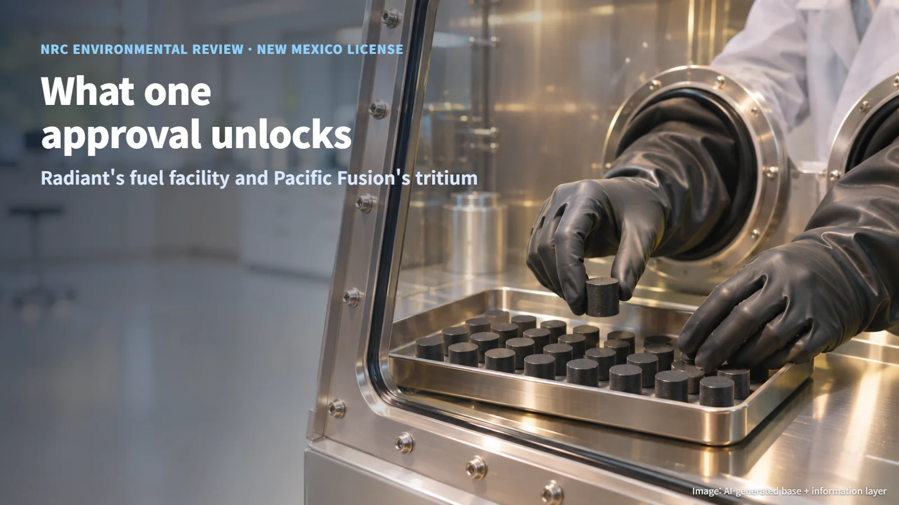
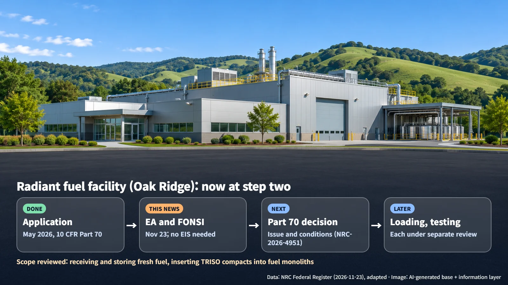
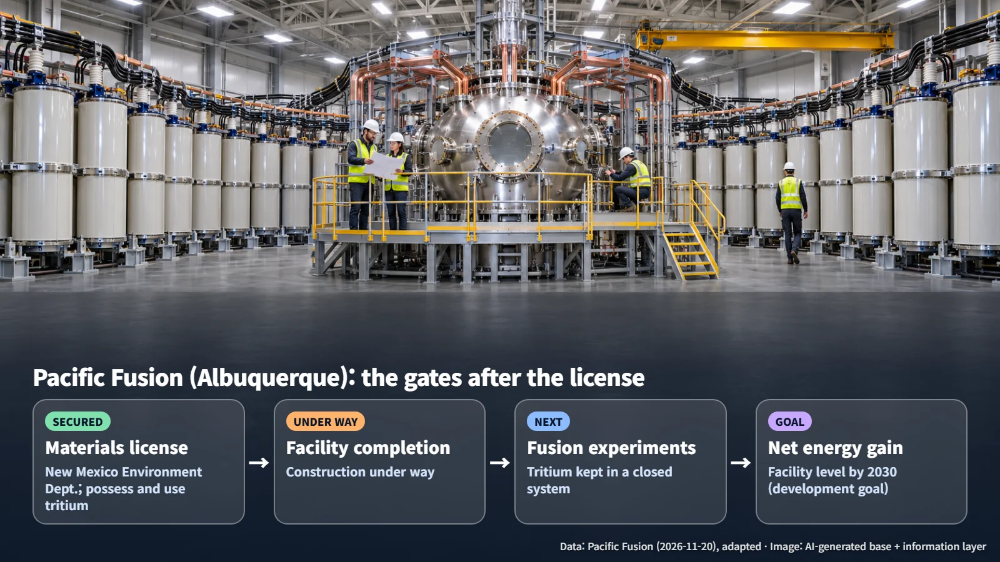

United States · Licensing · Microreactor fuel and fusion
What One Approval Unlocks: Radiant's Fuel Facility Review and Pacific Fusion's Tritium License
The NRC published an environmental assessment and FONSI for Radiant's Oak Ridge fuel facility, and Pacific Fusion received a New Mexico license to possess and use tritium.
The word "license" appears in nuclear news almost every week, and each license opens a specific, limited set of activities. A useful way to picture the process is a corridor of doors: every approval opens one door, and only the work behind that door can begin. Two announcements from the same week in the United States, an environmental review for a microreactor fuel facility and a radioactive materials license for a fusion company, show clearly how far each door opens and what comes next.

Radiant's Fuel Facility: What a Finished Environmental Assessment Means
On November 23, 2026, the U.S. Nuclear Regulatory Commission (NRC) published an Environmental Assessment (EA) and a Finding of No Significant Impact (FONSI) for the Radiant fuel facility in Oak Ridge, Tennessee. The facility will handle fuel for Radiant's Kaleidos microreactor, and its application for a special nuclear material license under 10 CFR Part 70 is under NRC review. Special nuclear material refers to fissile material such as enriched uranium, and any facility that handles it needs its own license.
U.S. environmental reviews are easiest to follow through three terms. An EA examines whether a proposed action could significantly affect the environment. When the agency concludes the effects are not significant, it issues a FONSI and the environmental review is complete. When significant effects are possible, the agency prepares a much larger Environmental Impact Statement (EIS). In medical terms, an EA is the routine checkup and an EIS is the full diagnostic workup.
The NRC accepted the application in May, then reviewed the applicant's supplements and its answers to environmental requests for additional information. It concluded that the proposed licensing action would not significantly affect environmental resources and decided that no EIS was needed. Laid out in order, the sequence is application accepted (May) → EA and FONSI published (November 23) → Part 70 license decision, and this week's news marks the second step. The environmental side of the review is now settled, and whether the license is issued, and under what conditions, will be decided in the NRC's Part 70 action (docket NRC-2026-4951).

The Work Covered by the Review, and the Next Gate
The scope of this environmental assessment is specific. It covers receiving and storing fresh fuel (new fuel that has not yet been in a reactor) and inserting TRISO fuel compacts into fuel monoliths, among related tasks. TRISO is a particle fuel in which tiny kernels of uranium are wrapped in several layers of carbon and ceramic; a compact is a pressed body made from many of these particles.
In practical terms, the facility serves as a fuel preparation room for the Kaleidos reactor, a unit in the 1 MW electric class: fuel arrives, is stored, and is assembled for use. Operation of the reactor itself is handled through a separate regulatory process.
The developer's later plans include loading fuel into the reactor, testing, refueling, and storing spent fuel, and each of these activities goes through its own regulatory review. Two things are worth watching next: first, whether the Part 70 special nuclear material license is issued and with what conditions; second, the separate licensing plans for fuel loading, testing, and spent fuel management. Along the chain of fuel handling → reactor loading and testing → spent fuel storage, the project has now completed the environmental review for the first link.
Pacific Fusion: What the Tritium License Opens
In the same week, on November 20, fusion company Pacific Fusion announced that the New Mexico Environment Department had approved a radioactive materials license for its research and manufacturing campus in Albuquerque. According to the company, the license allows it to possess and use tritium for fusion research at the campus, which the company describes as a $1 billion facility. Pacific Fusion also describes it as the first such license New Mexico has issued to a private fusion company.
Tritium is a radioactive isotope of hydrogen and, together with deuterium, one of the best-known fusion fuels. As a radioactive material, it calls for controls over storage, use, and waste handling. According to the company, the small amount of tritium it uses will be kept within a closed system, and any waste generated will be disposed of at licensed facilities outside the state.
With this license, the company now has the regulatory footing to manage the radioactive material its experiments will need. Construction of the facility is under way, and the company plans to keep working with the state Environment Department. The steps ahead are completing the experimental machine, running actual fusion experiments, and verifying the company's development goal of achieving facility-level net energy gain by 2030. Net energy gain describes a state in which a fusion reaction releases more energy than was used to drive it; the boundary at which that gain is measured is something to confirm alongside future test results.

Setting the Two Approvals Side by Side
| Item | Radiant fuel facility | Pacific Fusion campus |
|---|---|---|
| Deciding body | U.S. Nuclear Regulatory Commission (NRC, federal) | New Mexico Environment Department (state) |
| Basis and process | Environmental assessment (EA/FONSI) for a 10 CFR Part 70 license application | Radioactive materials license |
| Material | TRISO fresh fuel | Tritium for fusion research (small amount) |
| Activities reviewed or allowed | Receiving and storing fresh fuel, inserting compacts into monoliths, and related tasks | Possessing and using tritium (kept in a closed system) |
| Current stage | EA and FONSI published, Part 70 license decision pending | License approved |
| Next gate | Part 70 license decision and conditions; separate review for loading and testing | Facility completion, experimental operation, verification of the 2030 goal |
(Source: adapted from NRC, Federal Register, November 23, 2026, and Pacific Fusion announcement, November 20, 2026)
Placed side by side, the two stories sit at clearly different points. Radiant is midway through a federal licensing process: its environmental review is finished, and it now awaits the main license decision. Pacific Fusion has received its materials license from a state agency, and its remaining work is to demonstrate the facility and the technology. One handles fuel for a fission reactor and the other handles fuel for fusion experiments, yet in both cases the first gate is the same: bringing in, storing, and using the material safely.
The next time a licensing headline appears, three questions place a project quickly: which agency approved it, on what legal basis, and for which activities. The next milestones to watch are Radiant's Part 70 license decision and the construction and commissioning schedule for Pacific Fusion's facility.